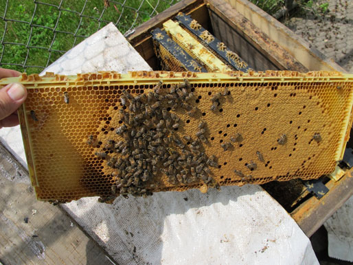

Honey Color Guide | Toolbox | Swarm Catcher | Local Pollinator Photos | Videos | Warré Hive Entrance Modifications | Contact
Medium Frame Horizontal Hive
"To Gallo [Le Vinti Giornate Dell'Agricoltvra Et De' Piaceri Della Villa, Agostino Gallo (1596)], the best hive of all was a horizontal rectangular one of wooden boards which could be opened at the back to take out pieces of comb."
― Eva Crane, The World History of Beekeeping and Honey Hunting (1999)
This horizontal rectangular hive is compatible with Langstroth medium frames and 8-frame supers. A medium frame horizontal hive can be easily built from reusable scrap lumber at minimal cost.
The medium frame horizontal hive contains no wax foundation. The frames shown are Mann Lake PF-120 4.9mm* cell size made from food grade plastic. The frame side-bars have been shaved to allow spacing of broodnest combs at 1¼ inch (32mm). Medium foundationless frames may also be used.
Features
Floor: Flat, ½ inch thick
Entrance: Top entrance at end, ⅜ inch high opening
Hive-Body Box: Variable size, W 21⅜ x H 7¼ x L 41¼ inches external dimensions, adjustable follower board, ¾ inch thick end walls and 1½ inch side walls
Comb Support: Medium Langstroth frames
Comb Spacing: Variable on-center spacing, 1¼ inch in the broodnest and 1⅜ inch in the honey storage areas
Cell Size: 4.9 mm* in brood nest
Comb Height: Medium Langstroth frames, 6¼ inch
Roof: Flat ¾ exterior plywood
Management: Horizontal and/or supered
Wintering: Flexible size and arrangement
Harvest: Raw, cut comb, strained and extracted
Climate: All aspects of beekeeping are influenced by the local climate. The following chart plots the average and record temperature data for the Midest USA 40°N location.
Update March 2015: The medium frame horizontal hive survived a third winter in very good condition. The colony is entering its fourth year and continues to be very robust.

Update May 2014: The colony continues to be very robust despite the later than normal spring. The bees remain extremely calm as the topbar cover material is lifted to access a few frames at a time from the rear of the hive.

Update March 2014: During the winter of 2013-2014 southward movements of the polar vortex in the Northern Hemisphere resulted in a winter of record cold, record snowfall and high winds. Temperatures as cold as -16° F (-26° C), 51 inches (130 cm) of snow and wind chills of -49° F (-45° C) proved to be an extreme test of the medium frame horizontal hive winter configuration in a Midwest USA location. Once agian the medium frame horizontal hive survived the winter in very good condition. The colony continues to defy the naysayers' assertion that horizontal hives, not to mention a medium frame horizontal hive, do not survive well in a climate with cold winters.

The following photos will show the winter configuration layers for the medium frame horizontal hive.
Update April 2013: The medium frame horizontal hive survived the winter of 2012-2013 in very good condition. The colony continues to be very robust. The horizontal layout makes the hive very easy to access. As a result the colony has become my "go to" colony whenever frames of brood or drawn comb are needed.
Update August 2012: Mongrel Russian bees were placed in the medium frame horizontal hive in April 2012. The rapidly growing colony was split in July 2012.


This site is licensed under a Creative Commons
Attribution-NonCommercial-ShareAlike 3.0 Unported License.
Updated 11 March 2015 | eccentric beekeeper